Перегони в пустелі
Передмова:
Ця гра розрахована на двох гравців, які керують папугою та левом, що рухаються через пустелю. Кожен гравець повинен натискати клавішу якомога швидше, бо виграє той, чия тварина першою дісталась до краю екрану.
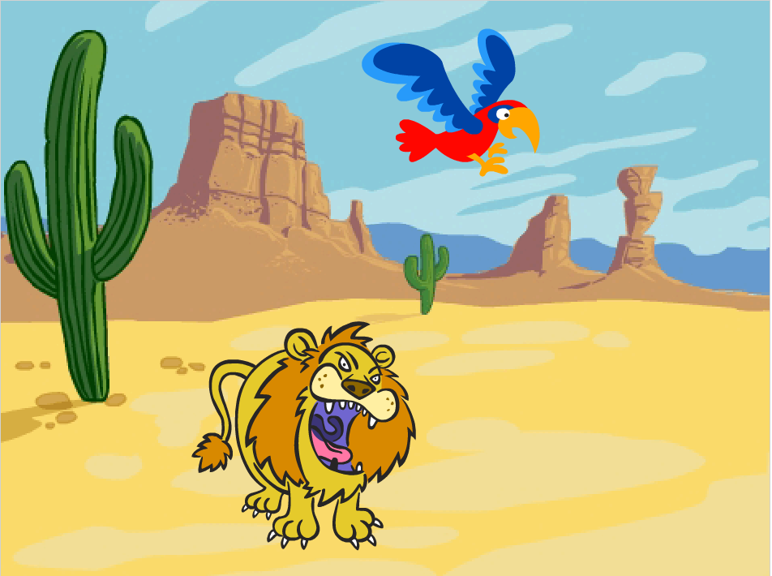Крок 1: Створення сцени та спрайтів.
- В об'єкті "Сцена" додайте фон пустелі.
- Створіть нового персонажа, додавши спрайт Лева із папки Тварини
- Додайте ще одного персонажа, обравши спрайт Папуги у папці Тварини.
- Змініть розміри тварин. Розставте персонажів.
Крок 2: Лев і Папуга починають рухатись.
Персонажі повинні рухатися при натисканні клавіші.
- Пропишіть скрипт для Лева, за яким він переміщатиметься на 4 кроки при натисканні клавіші англійської літери M: 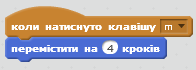
- Потім пропишіть скрипт Папуги, за яким він переміщатиметься на 4 кроки при натисканні клавіші англійської літери A: 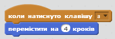
Протестуй свій проект
Натисни на зелений прапорець.
Чи рухаються папуга та лев вздовж екрану при натисненні клавіш А та M?
Крок 3: Початок гонки.
Потрібно якимсь чином розпочати перегони, а потім дізнатись, хто з них виграв. Спершу створимо кнопку "Старт".
- Додайте новий об'єкт у проект. Оберіть спрайт "кнопка" (button) у папці Речі.
- Відредагуйте спрайт кнопки та додайте напис "старт" на нього, натисніть ОК. Розташуйте спрайт посередині сцени.
- Тепер створіть скрипт, за яким ця кнопка з'являтиметься при запуску проекта: 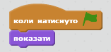
- Тепер зробіть так, щоб кнопка починала зворотній відлік з 3-ки, потім давала команду почати рух і зникала при кліку на неї. Створіть такий скрипт: 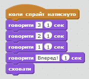
Протестуй свій проект
Натисніть на зелений прапорець.
Кнопка при натисканні веде зворотній відлік перед тим як щезнути?
Нам треба, щоб Лев та Папуга починали рухатись після команди Вперед!, і ще нам потрібно знати, коли перегони закінчаться, тож створимо змінну для отримання цієї інформації.
- Додайте змінну під назвою "Перегони" для всіх спрайтів. Зніміть галочку поруч з нею, щоб змінна не з'являлась на сцені.
- Тепер надайте змінній значення 0 у момент початку гри. Змініть свій скрипт Кнопки коли натиснуто прапорець таким чином: 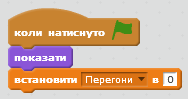
- Надайте значення 1 змінній "Перегони", коли завершиться зворотній відлік. 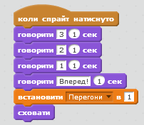
- Лев та Папуга не повинні рухатись до того, як змінна Перегони набуде значення 1. Натисніть на спрайт Папуги. Додайте в його скрипт контрольний блок, що дозволить пташці рухатись лише тоді, коли Перегони = 1 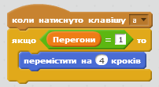
- Тепер зробіть те саме для спрайта Лева.
Протестуй свій проект
Натисни на зелений прапорець.
Чи мають лев та папуга можливість рухатись тільки після завершення зворотнього відліку?
Крок 4: Завершення перегонів.
Нам потрібно знати, хто ж з них виграв перегони, і перезапустити їх після завершення, щоб можна було грати знову.
- Додайте у скрипт Папуги блок, що присвоює змінній Перегони значення 0, коли спрайт торкається краю екрану. 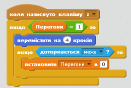
- Також необхідно, щоб папуга повідомляв нам, чи виграв він перегони. Запишіть новий звук для спрайту папуги, що буде звучати, якщо папуга виграє. Для цього оберіть вкладку Звуки і запишіть звук.
- Тепер додайте у скрипт блоки, що програватимуть записаний вами звук і давати можливість Папузі говорити, що він виграв. 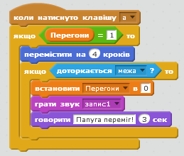
- Зробіть те саме для лева.
Протестуй свій проект
Натисни на зелений прапорець.
Чи можна після натискання кнопки "старт" почати перегони натиснувши клавіші А та M?
Чи програються відповідні звуки і чи з'являються відповідні повідомлення, коли кожен з тварин перемагає?
Крок 5: Перезапуск гри.
Після завершення перегонів необхідно повідомити іншим спрайтам про перемогу та перезапустити гру, щоб можна було грати спочатку.
Потрібно щоб персонаж, який переміг оповістив про свою перемогу.
- Клікніть на об'єкт Лева. Додайте блок оповістити "кінець" після того, як він повідомляє про свою перемогу. 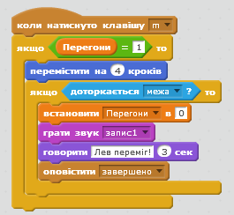
- Тепер необхідно додати новий скрипт, що аналізував би оповіщення і переміщав Лева назад у стартову позицію. Що відбудеться, якщо змінити значення присвоєне х? 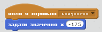
- Тепер створіть такий же скрипт для спрайта Папуги. Спробуйте задавати різні значення х, щоб переконатись, що Лев та Папуга стартують з одної лінії.
- Необхідно також, щоб Лев та Папуга стартували з однакових позицій при запуску гри, тому додайте у скрипти, що прописують рух спрайтів, відповідний блок: 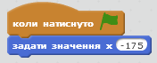
- Натисніть на спрайт кнопки Старт і додайте скрипт, що виводить її на екран, після того, як отримали оповіщення "Завершено". 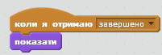
Протестуй свою гру
Натисни на зелений прапорець.
Чи можна грати в гру з другом, коли один, натискаючи А, рухає Папугу, а інший ,натискаючи M, керує Левом?
Бонусне завдання: Додавання прискорювача.
1) Спробуйте додати прискорювач, який за 1 натискання клавіші переміщує спрайт на 30 кроків, скористатись ним можна один раз за гру
2) Додайте новий образ, який спалахує вогнем, для кожного спрайта, щоб він з'являвся, коли натиснуто кнопку прискорювача
3) Створіть інший звук, який би видавав спрайт при натисканні на прискорювач.
Збережи свій проект.